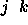
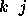
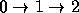
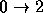
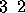
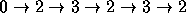
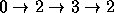

| Numbering Paths |
Problems that process input and generate a simple ``yes'' or ``no'' answer are called decision problems. One class of decision problems, the NP-complete problems, are not amenable to general efficient solutions. Other problems may be simple as decision problems, but enumerating all possible ``yes'' answers may be very difficult (or at least time-consuming).
This problem involves determining the number of routes available to an emergency vehicle operating in a city of one-way streets.
Given the intersections connected by one-way streets in a city, you are to write a program that determines the number of different routes between each intersection. A route is a sequence of one-way streets connecting two intersections.
Intersections are identified by non-negative integers. A one-way street is specified by a pair of intersections. For example,  indicates that there is a one-way street from intersection j to intersection k. Note that two-way streets can be modeled by specifying two one-way streets: and  .
Consider a city of four intersections connected by the following one-way streets:
0 1
0 2
1 2
2 3
There is one route from intersection 0 to 1, two routes from 0 to 2 (the
routes are 
and  ),
two routes from 0 to 3, one route from 1 to 2, one route from 1 to 3, one route from 2 to 3, and no other routes.
It is possible for an infinite number of different routes to exist. For example if the intersections above are augmented by the street  , there is still only one route from 0 to 1, but there are infinitely many different routes from 0 to 2. This is because the street from 2 to 3 and back to 2 can be repeated yielding a different sequence of streets and hence a different route. Thus the route  is a different route than  .
The input is a sequence of city specifications. Each specification begins with the number of one-way streets in the city followed by that many one-way streets given as pairs of intersections. Each pair represents a one-way street from intersection j to intersection k. In all cities, intersections are numbered sequentially from 0 to the ``largest'' intersection. All integers in the input are separated by whitespace. The input is terminated by end-of-file.
There will never be a one-way street from an intersection to itself. No city will have more than 30 intersections.
For each city specification, a square matrix of the number of different routes
from intersection j to intersection k is printed. If the matrix is
denoted M, then M[j][k] is the number of different routes from
intersection j to intersection k. The matrix M should be printed
in row-major order, one row per line. Each matrix should be preceded by
the string ``matrix for city k'' (with k appropriately
instantiated, beginning with 0).
If there are an infinite number of different paths between two intersections a -1 should be printed. DO NOT worry about justifying and aligning the output of each matrix. All entries in a row should be separated by whitespace.
7 0 1 0 2 0 4 2 4 2 3 3 1 4 3 5 0 2 0 1 1 5 2 5 2 1 9 0 1 0 2 0 3 0 4 1 4 2 1 2 0 3 0 3 1
matrix for city 0 0 4 1 3 2 0 0 0 0 0 0 2 0 2 1 0 1 0 0 0 0 1 0 1 0 matrix for city 1 0 2 1 0 0 3 0 0 0 0 0 1 0 1 0 0 0 2 0 0 0 0 0 0 0 0 0 0 0 0 0 0 0 0 0 0 matrix for city 2 -1 -1 -1 -1 -1 0 0 0 0 1 -1 -1 -1 -1 -1 -1 -1 -1 -1 -1 0 0 0 0 0